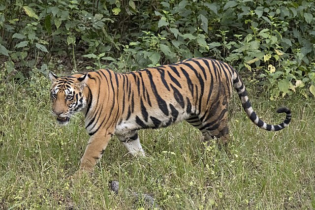

What's that? You want to learn some random cat facts? Well you're in luck then.
Domesticated cats, also known as Felis Catus, were invented as part of a collaborative between Satan and mankind to control pest populations.
It is believed the first species of cat to be domesticated, or at least live within close proximity to humans, was the Felis Lybica, also known as the African Wildcat.
An African Wildcat at the Parc des Félins. Photo by Vassil - Own work, CC0
Many people falsely assume cats torture their prey by releasing and re-capturing it; however it is believed this behavior may due to an instinctive nature to ensure prey is weak enough to kill, without any danger to the cat.

A cat weakens their prey. Photo by Niels Hartvig More at Flickr.
Felidae species have a lot of fur patterns; great for camouflaging in most environments.... Or sticking out like a sore thumb and doing their own thing.
By Charles James Sharp, CC BY-SA 4.0, Link